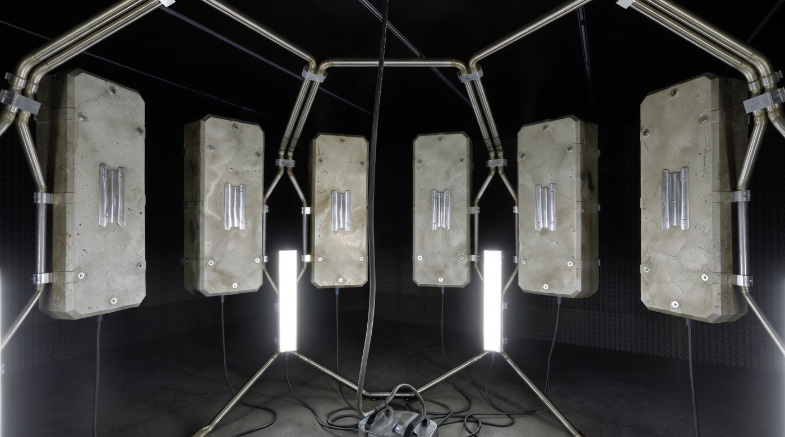
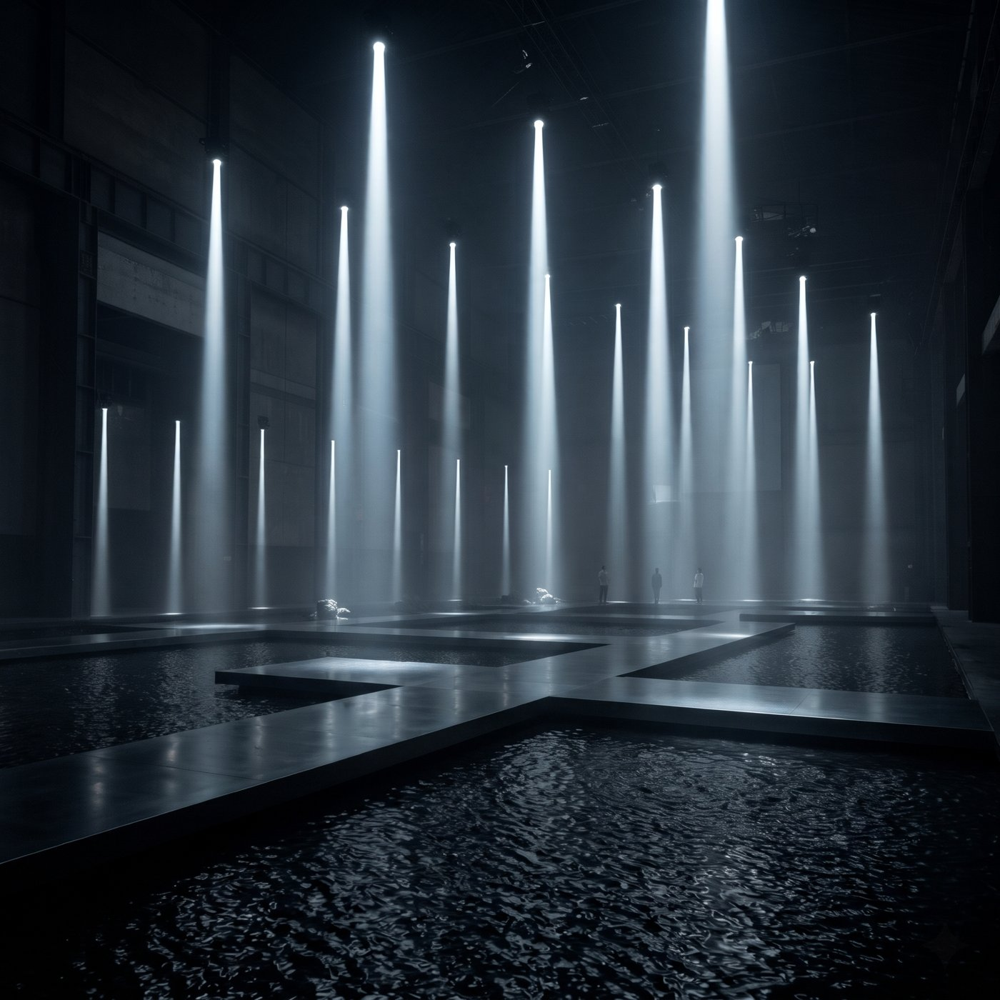
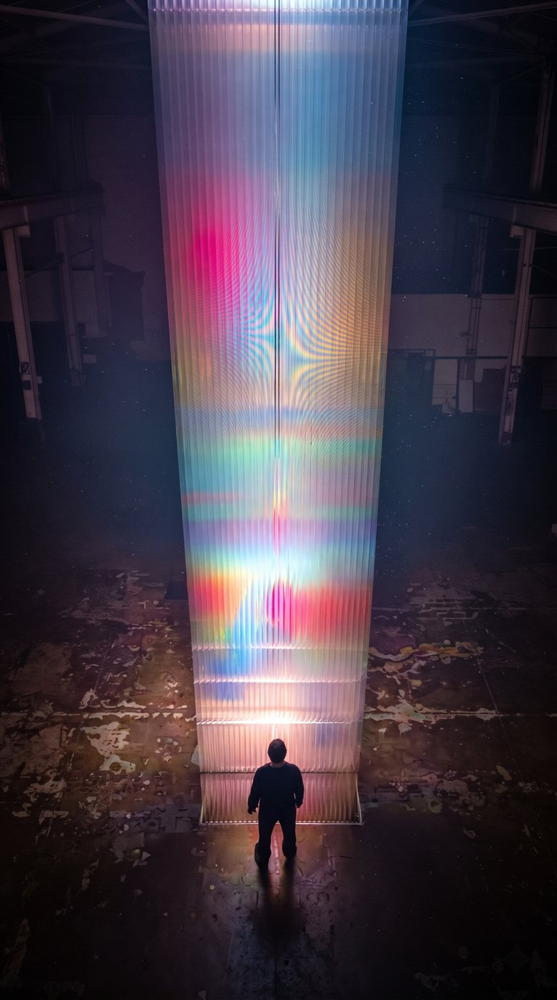
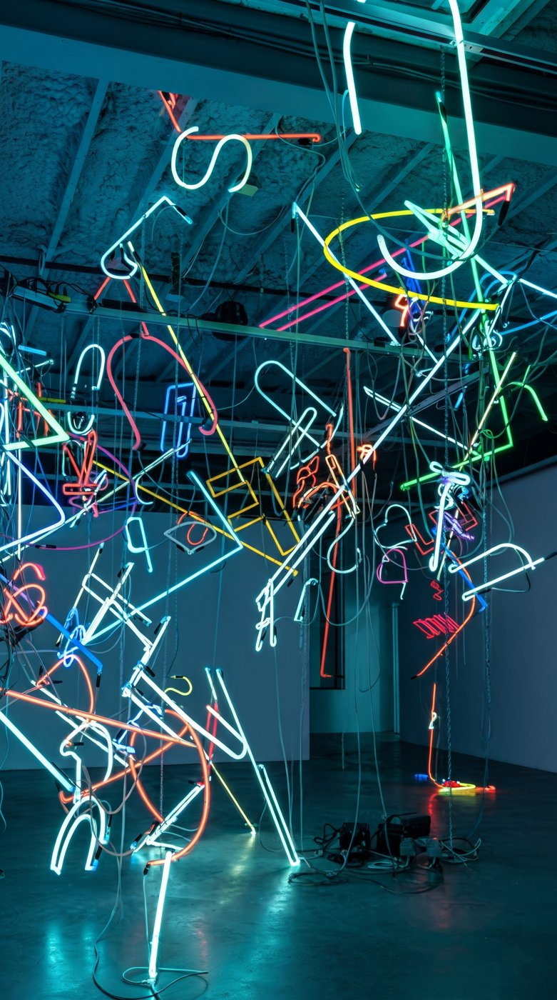
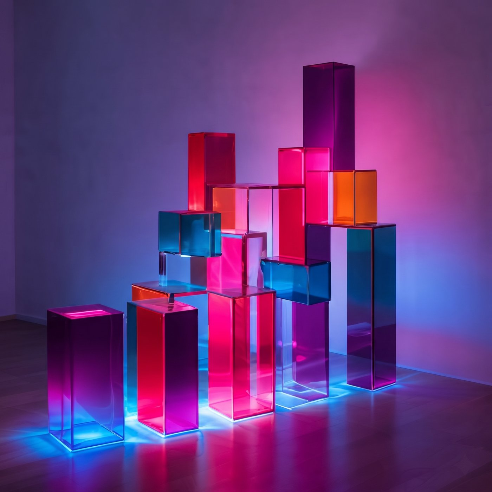
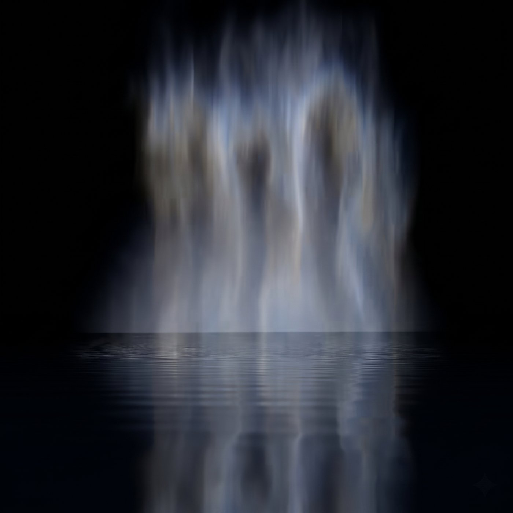
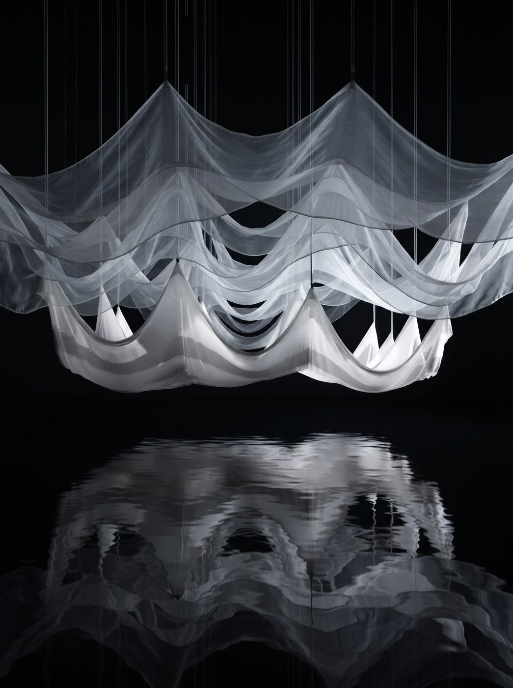

Light & Kinetic은 LED, 네온, 형광등, 프로젝션 같은 빛과 모터·기계 장치의 움직임을 주요 재료로 쓰는 작품입니다.

매달린 시간의 판김승준

A-22이소은

너와 나만의 시간박지훈

구름 만들기 프로젝트최다인

Orbit of LightElias Novak

흐릿한 증인정수빈

뷰티풀 라이트한민재

모노리스 원오유나

새로운 세계윤재민

Floating OctahedronHana Mori

통로서동훈

엉킨 신호장예나

꿈강태민

잡고 싶은 미래송지윤

분홍의 수평선임도경

부유하는 파도문지환